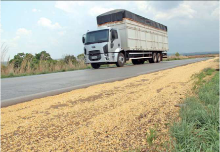
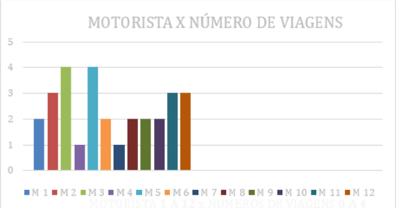
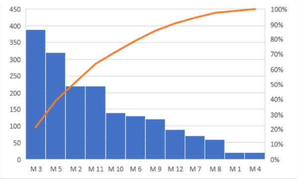
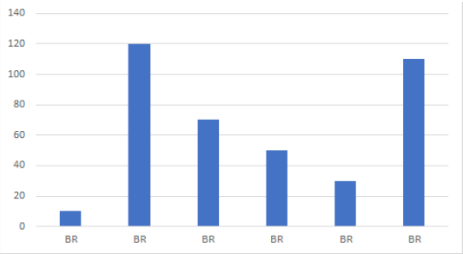
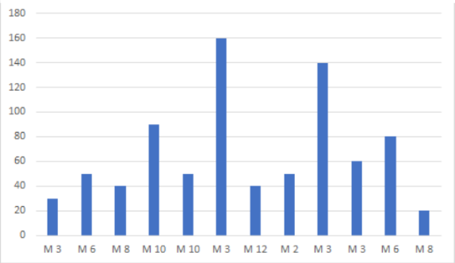
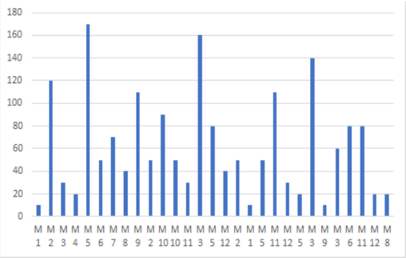
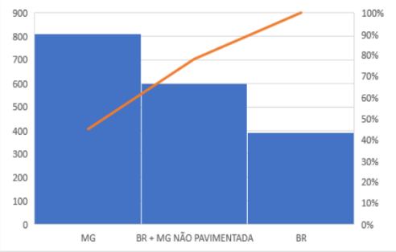
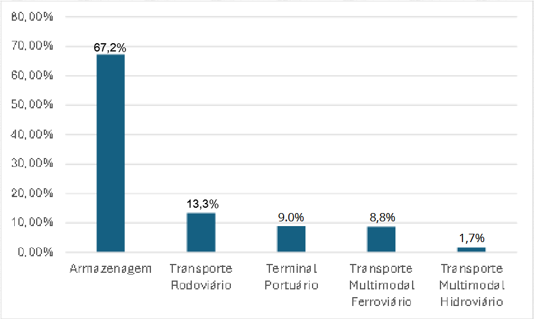
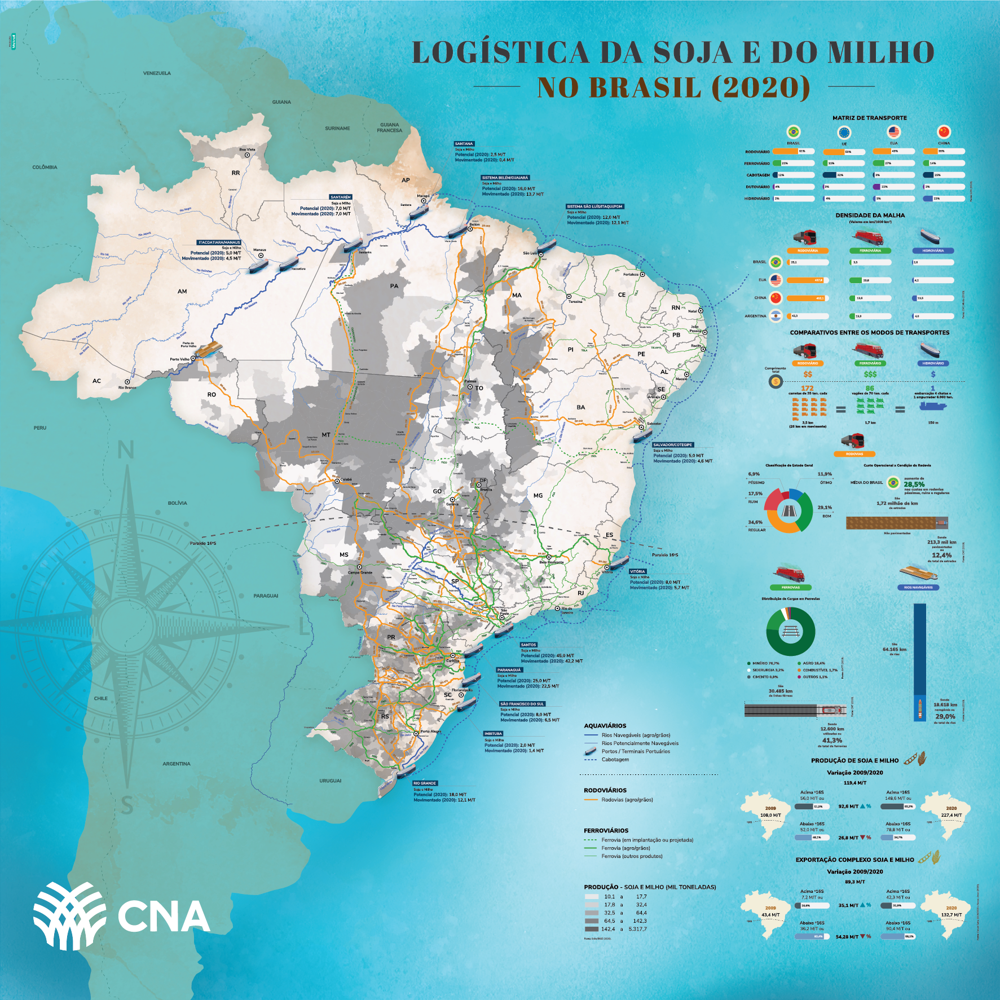

BR-163: A Rota da Soja
Análise da importância estratégica e desafios logísticos
Importância Estratégica
A BR-163 é responsável pelo escoamento de aproximadamente 50 milhões de toneladas de grãos anualmente, sendo a principal via de transporte da soja produzida no Centro-Oeste brasileiro.
Esta rodovia conecta as principais regiões produtoras de soja e milho ao Porto de Santos, sendo vital para a exportação de commodities agrícolas brasileiras no mercado global.
Toneladas escoadas anualmente: 50 milhões
Contexto Logístico
Dados sobre perdas no transporte rodoviário brasileiro
30% Mais Caro no Brasil
O transporte no Brasil é 30% mais caro comparado aos EUA, impactando a competitividade das exportações agrícolas brasileiras.

Perdas de Grãos no Transporte
Quantificação e distribuição das perdas logísticas
2,5% de Perdas
De 50 milhões de toneladas escoadas pela BR-163, 1,25 milhão de toneladas são perdidas no transporte, equivalente a perdas de 2,5% por safra.
Impacto Econômico:
Essa perda representa um prejuízo estimado de mais de R$ 3 bilhões anuais para a economia brasileira, afetando produtores, transportadoras e a competitividade do país no mercado global.
1,25 milhão de toneladas perdidas anualmente na BR-163
Distribuição Geográfica das Perdas
Estados com maiores perdas de grãos no transporte
Mapa de Perdas por Estado
O Mato Grosso é o estado com maiores registros de perdas de grãos no transporte rodoviário, seguido por Goiás e São Paulo. Esses estados concentram as principais rotas de escoamento da produção agrícola.
As perdas variam conforme a condição das estradas, conservação dos veículos e adequação dos sistemas de vedação das carrocerias.
- Mato Grosso - Principal produtor de soja
- Goiás - Região produtora e de passagem
- São Paulo - Última etapa até Porto de Santos
Fatores Principais de Perda
Análise dos problemas identificados no transporte
Gráficos & Visualizações
Dados quantitativos de pesquisa de campo documental
Metodologia: Os dados apresentados foram obtidos através de uma pesquisa de campo documental conduzida por Gabriel Caldeira Cardoso, estudante da Universidade Federal de Uberlândia (UFU), buscando quantificar e analisar as perdas de grãos durante o transporte rodoviário, considerando variáveis como tipo de rodovia, estado de conservação dos veículos e distâncias percorridas. A análise é fundamentada em levantamento bibliográfico extenso e análise documental de dados secundários de qualidade.

Clique para ampliar

Clique para ampliar

Clique para ampliar

Clique para ampliar

Clique para ampliar

Clique para ampliar
Dificuldades Técnicas Identificadas
Principais obstáculos na logística de transporte
Vedação Inadequada
Caminhões sem sistemas de vedação eficientes
Infraestrutura Deficiente
Estradas mal conservadas e buracos
Manutenção de Veículos
Frota com manutenção inadequada
Distância Percorrida
Longas distâncias aumentam perdas
Gestão Logística
Falta de controle e rastreamento
Climático
Chuvas e umidade afetam os grãos
A Solução: Vedação Adequada
Como reduzir perdas de forma prática e econômica
Redução de 77% com Vedação
Sistemas de vedação adequada reduzem perdas em até 77%, sendo uma solução simples, eficaz e economicamente viável para o setor de transporte de grãos.
A implementação de vedação:
- ✓ Reduz perdas significativamente
- ✓ É economicamente viável
- ✓ Melhora a sustentabilidade
- ✓ Aumenta a competitividade
- ✓ Protege a carga durante o trajeto
Análise Comparativa de Perdas
Distribuição e cenários de perdas logísticas

Clique para ampliar

Clique para ampliar
Pronto para a Solução?
Conheça como a GrainShield pode transformar a logística do agronegócio brasileiro